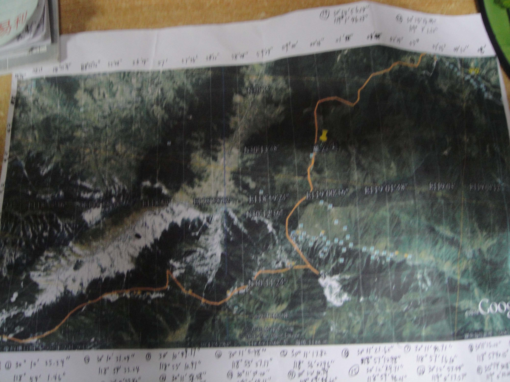
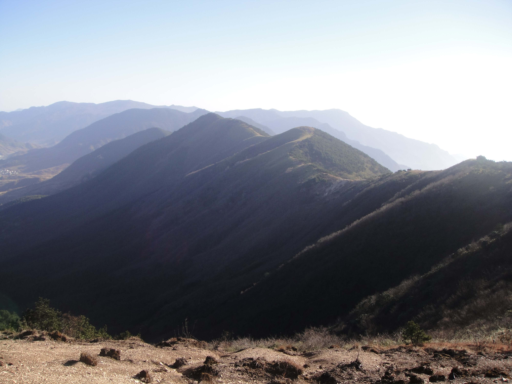
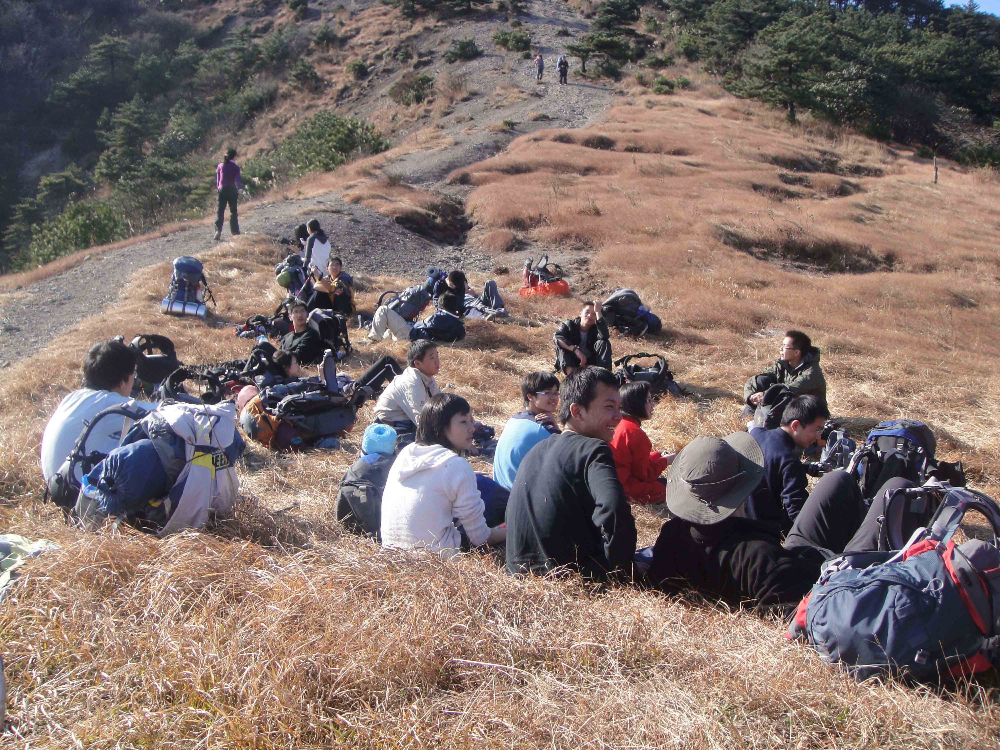
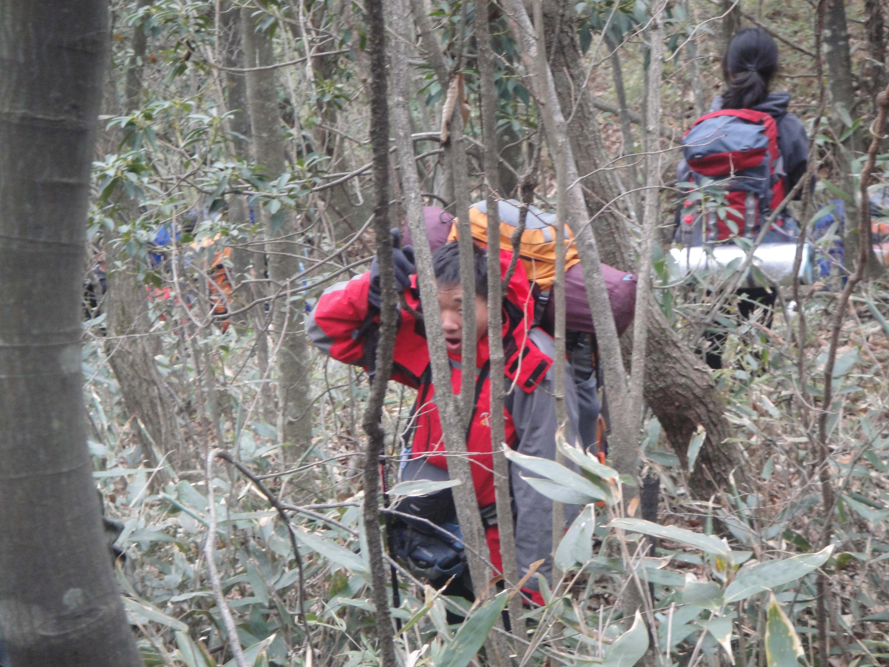

发信人: louandlou (是开碧落), 信区: outdoor
标 题: 乱弹三尖攻略（楼世超)
发信站: 饮水思源 (2010年12月04日11:28:48 星期六)
说准备：如果不带向导，千万记得备好水，一人3升，路上基本无水源（除了最后一天下午
我看到）如果防潮垫放外面，记得做好保护工作，本人自己的被刮得那个凄惨啊，心疼啊
。
大致路线：D1从浙基田----太子尖----上中下马啸岭----百丈岭林场
D2---营地-----大牛粪----童公尖-------上坪-----回家
 screen.width - 200){this.width = screen.width - 200}">
本人自己直接从gooogle earth上下了别人走的线，自己加密经纬线，并查出各个拐点经纬
坐标。
其实十分蛋疼。。。别人走的线到底是别人走的，走到后来发现其实纬度对的很精确，经
度有点差远。。。
所以建议最好有详细的等高线图，配上指南针。因为走的时候很容易发现，四周有几座山
，配上等高线图及方向比较容易找到自己的方位。而经纬度。。。鬼知道，只能判断当下
位置，以及大致走向。
前一天晚上到第一天凌晨间车到达浙基田，有一块很多垃圾且较平整的地方，该营地比较
乱，不可能大家都聚在一起，要尽快找好地方而且地上有时会出现石头，为了帐篷，注意
清理干净。还有，那块地面极硬，地钉难叉。早点睡了。。。
第一天上山，山在营地对面，往回走就上山了，开始判断好大致走向，就一直可以走下去
（到了太子尖我都不知道，那是个很不起眼的地方，由于走的比较快，当时是7点50左右）
，因为是沿着山脊，然后就是不停地上山下山，方向都不用辨认，沿着山走就可以了。由
于咱11月份去，草很多地方都没了，只剩荒草或光山脊。依次路过上中马啸岭，此段路开
始有小树林，再到下马啸岭时吃中饭，大约11点半到12点到达，此处是个斜坡，且为一个
90度转弯口，极易辨认。吃完饭会遇到本线第一个难点：绝望坡。绝望坡上山路窄，且比
较陡，建议可适当放慢速度，但不要停（斜坡上停下来上也不是，下也不是，更累）爬完
发现也不咋地。后面路有各式木桥，泥泞，树林，此时要注意队伍衔接，不然极易前后队
伍断开，但行路难度不大。然后很快就会到营地。那儿有个小木屋，营地基本就建在后面
，此地土质软，有轻微坡度。可自建篝火。。。注意安全。
第二天上山就是直接走到营地后面，有点小陡。上午至童公尖前基本无难度，视野开阔，
方向容易辨认。童公尖若下山至上坪村，此段路估计长久没有人走，中间林木杂生，基本
行走是一侧是水源，一侧是山体，沿水源而下就不会错了，路途中有许多石路，高低坡，
以及其他各种路况，而且是从1.5KM走到0.8KM左右都是各种路，对膝盖及脚要求较大，比
较虐，个人认为是本次最大亮点。走时注意确认路旁以前的路标。快进入上坪村时会看见
一条人工修建的水渠，然后沿此水渠而下结束本次行程。
两天中休息地点各种地方会有十分舒服的草甸，各种留念，舒服~~~~~~~~~~~~~~
 screen.width - 200){this.width = screen.width - 200}">
第一天上午沿着这山走准没错
 screen.width - 200){this.width = screen.width - 200}">
舒服的草甸
 screen.width - 200){this.width = screen.width - 200}">
第二天各种林木
--
等到没来由的心痛，看见那看不见的未来。
错了，不能将错就错。
过了，做不到一笑而过。
看吧，只能轻声寂寥。
昨夜风起，我们都醉了。
尽情狂啸，尽夜自嘲。
※ 来源:·饮水思源 bbs.sjtu.edu.cn·[FROM: 59.78.38.146]
※ 修改:·louandlou 于 2010年12月04日11:29:01 修改本文·[FROM: 59.78.38.146]
|